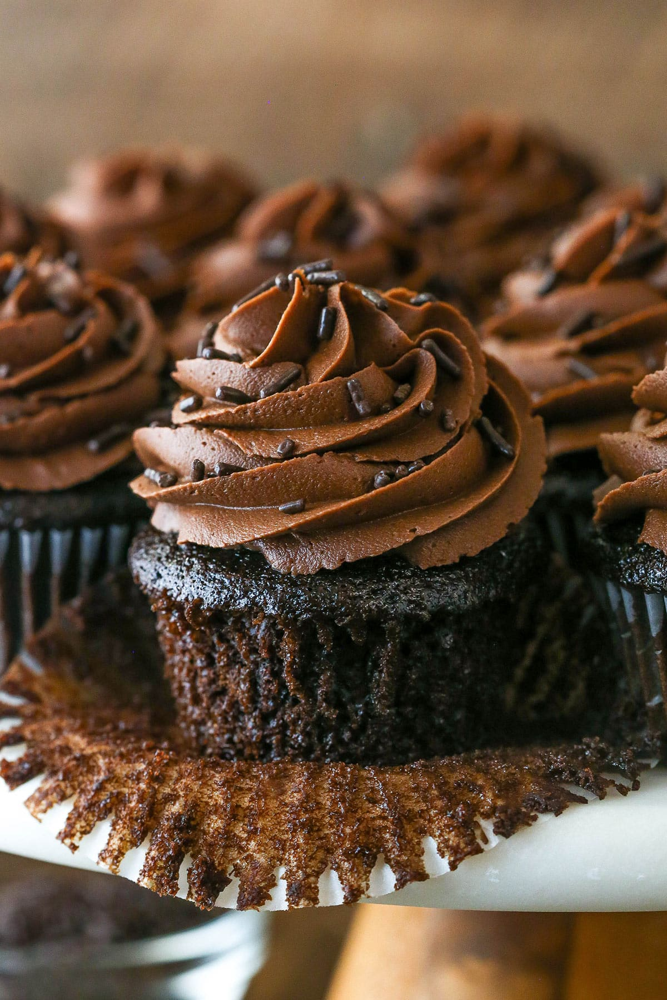

Classic Chocolate Cupcakes

Image Credit: https://www.lifeloveandsugar.com
Rich, moist, and full of deep chocolate flavor, these cupcakes are a go-to treat for any chocolate lover. Simple to make and perfect for any occasion!
Prep Time: 15 min
Bake Time: 20 min
Total Time: 35 min
Yields: 12 cupcakes
For the Cupcakes
- 1 cup all-purpose flour
- ¾ cup granulated sugar
- ½ cup unsweetened cocoa powder
- 1 teaspoon baking soda
- ½ teaspoon baking powder
- ¼ teaspoon salt
- ½ cup vegetable oil (or melted butter)
- 2 large eggs
- 1 teaspoon pure vanilla extract
- ½ cup buttermilk
- ½ cup hot water or freshly brewed coffee
For the Chocolate Frosting
- ½ cup unsalted butter, softened
- ⅔ cup unsweetened cocoa powder
- 3 cups powdered sugar
- ¼ cup milk (plus more as needed)
- 1 teaspoon pure vanilla extract
- Pinch of salt
- Chocolate shavings or sprinkles for topping (optional)
Instructions
- Preheat your oven to 350°F. Line a 12-cup muffin tin with cupcake liners.
- In a large bowl, whisk together flour, sugar, cocoa powder, baking soda, baking powder, and salt.
- In another bowl, whisk together eggs, oil, vanilla, and buttermilk until well combined.
- Add the wet ingredients to the dry and mix until just combined.
- Stir in the hot water or coffee — the batter will be thin.
- Divide the batter evenly among the liners (about ¾ full). Bake for 20 minutes, or until a toothpick inserted in the center comes out clean.
- Let cupcakes cool in the pan for 5 minutes, then transfer to a wire rack to cool completely before frosting.
Make the Frosting
- Beat butter until creamy. Add cocoa powder and beat until combined.
- Gradually add powdered sugar, 1 cup at a time, mixing on low speed.
- Add milk, vanilla, and salt. Beat on high for 3 minutes until smooth and fluffy.
- Add more milk if needed to reach your desired consistency.
- Frost cooled cupcakes and top with chocolate shavings or sprinkles if desired.
Helpful Tips!
- Use coffee instead of water to deepen the chocolate flavor without making the cupcakes taste like coffee.
- Let cupcakes cool completely before adding frosting.
- Use high-quality cocoa powder for the richest flavor.
- Don't skip the hot water — it helps "bloom" the cocoa powder for better taste and texture.
- Store cupcakes in an airtight container at room temperature for 2 days or refrigerate for up to 5 days.
- Let chilled cupcakes sit at room temperature for 15 minutes before serving for best flavor and softness.